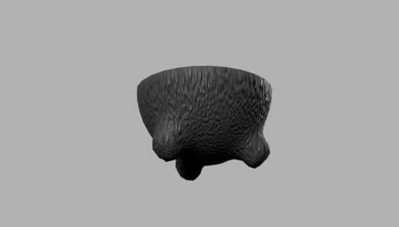

ARTIFACT
Phase 1 | Find and Print a Thingiverse Artifact
The molcajete is an ancient artifact from Mexico that is several thousand years
old.
Its appearance has not changed since its inception. They are made of volcanic stone
and
they're used to crush and grind spices and to prepare salsas and guacamole.
I chose this because I am familiar with the artifact and the Mexican culture. All my
relatives
back in Mexico have this at their disposal, ready to use.
Original Image From Thingiverse
MolcajeteFusion 360 Render

Cura LulzBot
Phase 2 | Artifact and Story: Project Outline
Phase 3 | Rough Images and Story
In a world where we have discovered teleportation but not to its full
potential, there
exists a portal pistol device that can transport objects
that are 12 x 12. There would
be faster service in food delivery and package
delivery. It would cost a bit more to
choose this option but you will get your
item in seconds; same minute delivery.
You set coordinates to where you would like
the object to be transported, then you
shoot the gun on any surface. A cool sound and bright
light will appear for a second
before the portal appears. Then you get the item and put it through
the portal, and you
successfully used the portal gun. The scouter is there to help you with
the accurracy of
the shot.
In a world where time travel is possible, there exists a camera that could take pictures
from the past in any position you are in. For example, if you set the option to 1999 on
the camera and take a picture of a full grown tree, you will see a picture of a sapling.
It is the same tree in the same position but in 1999. Everything is placed how it was in
1999. The same rules apply with any year.
Phase 4 | Rough Draft of Model and Story
Coral Knife Fusion 360 link
In a world where coral is at the brink of extinction, we decided to capitalize on the situation and make use of the remaining coral. With my teammates Noor and Rachel, we created objects primarily made out of coral. My object is the "Coral Knife", having a nice red blade with the appearance and texture of coral, followed by the handle which is made out of cherry wood. With our objects we keep the existence of coral and at the same time make use of them.
Phase 5 | Final Fusion Object

Phase 8 | Final Presentation, Documentation, & Video
Reef Builds Video
Here at Reef Builds we have dedicated ourselves to saving Coral from the brink of extinction
by turning them into common
household items like knives, vases, and houses. This allows us to
keep Coral in existance and make use of them.